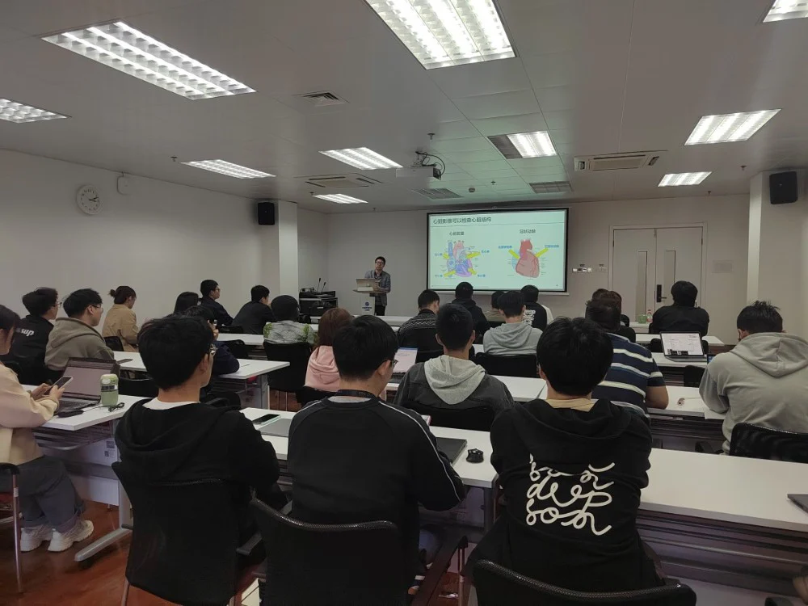
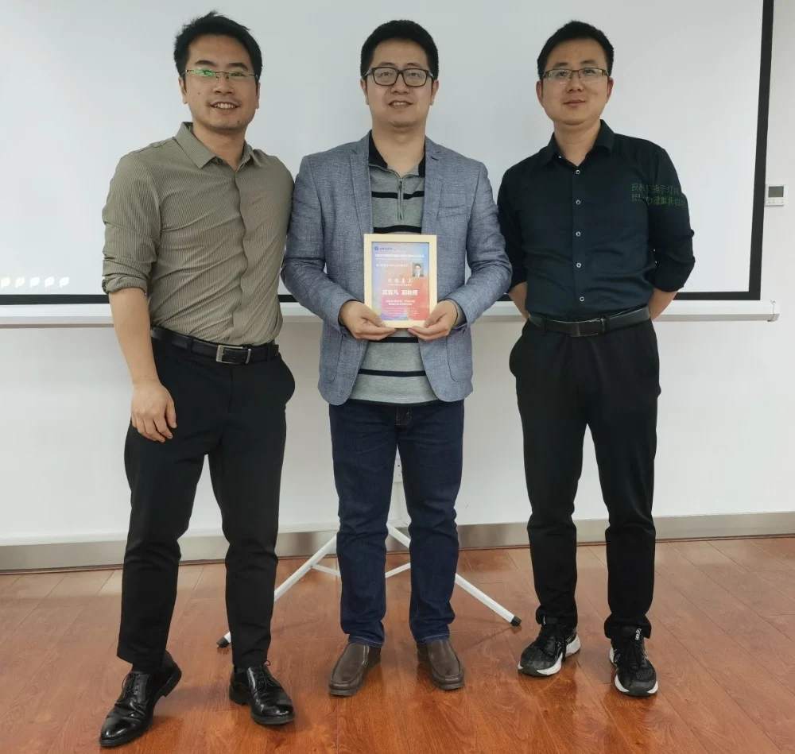

医学图像/眼科影像专题学术分享会
---- iMED第五十五讲
邀请嘉宾：
高智凡副教授 中山大学
2023年4月27日，iMED团队邀请高智凡副教授来医工所为同学们做了一场关于基于机器学习的心脏影像学的讲座。本次讲座激发了同学们科研的兴趣，加深了同学们对与人工智能运用于医学影像处理的认知。本次分享会由IMED团队的赵一天研究员主持。
高智凡，博士毕业于中国科学院大学，现为中山大学生物医学工程学院副教授，从事心脏医学影像分析方面的研究工作10余年。他的主要研究方向是心脏医学影像分析，尤其是应用计算机视觉和机器学习技术开发自动化的心脏影像分析方法，以帮助临床医生更准确地诊断和治疗心血管疾病。他已在多个国际著名期刊上发表了众多论文，并获得了多项科研成果奖励。他致力于将科学研究成果转化为实际应用，并积极参与心血管医学领域的跨学科合作研究，为提高临床医疗水平和患者生命质量做出了重要贡献。
高智凡老师分享了主题为《基于机器学习的心脏影像分析》的讲座。首先，他介绍相关内容的背景知识，包括为什么关注心脏疾病、为什么关注心脏影像以及心脏影像与自然影响处理任务之间的区别与挑战。
然后详细介绍了团队围绕心脏影像学开展的三项主要工作：心血管影像的重建、心血管影像的分割、心血管影像的功能学定量评估。在心血管影像的重建工作中，高老师介绍了使用生成技术为少量造影剂重建高质量的冠状动脉图像的方法。该方法可以显著减少患者暴露于造影剂的剂量，从而降低对患者的伤害和风险。这项技术使用了一种基于卷积神经网络的生成对抗网络（GAN）模型，将少量造影剂下的低质量冠状动脉图像转换为高质量的图像。它可以在不增加造影剂剂量的情况下提高图像质量，并临床医生提供更准确、更可靠的图像信息，帮助他们更好地进行诊断和治疗。在心血管影像的分割工作中，高老师介绍了多项有趣的研究，例如介入血管图像分割、冠脉优势血管分割等，旨在通过分析心血管图像来分离血管结构和背景，并进一步提取有关血管的相关信息，以帮助医生进行血管病变的诊断和治疗。在心血管影像的功能学定量评估工作的介绍中，高老师介绍了血流储备分数的计算、非增强MRI影像的心梗识别等。这些指标的计算和测量需要借助心血管影像学的技术和方法，结合医学专业知识和临床经验进行定量分析和评估，为临床医生制定治疗方案和预后评估提供重要依据。

高老师的讲解给同学们在病理知识及人工智能技术带来深刻地思考。马煜辉同学就心血管边界的标注，重建工作对下游任务影响等问题与高老师进行了充分的讨论与交流。郭家琦同学对生成网络算法的设计、心电图的三维重建等工作进行提问，谢起航同学也就血管指标计算中的挑战与不足提出疑问，冯远静老师一一给出详细解答，耐心的为大家答疑解惑。
通过本次讲座，同学们对生物医学工程的重要性和潜力有了更加深入的了解。iMED将会继续将工程技术与医学相结合，为未来的医学诊断和治疗提供新思路和新方法。
